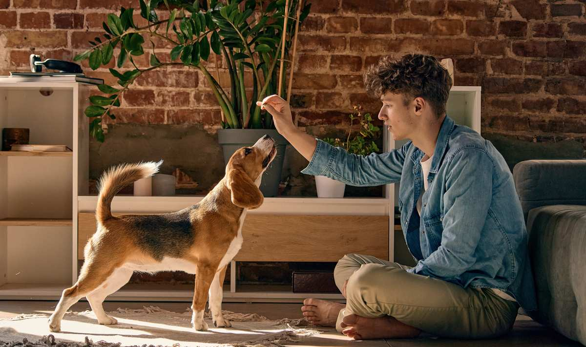
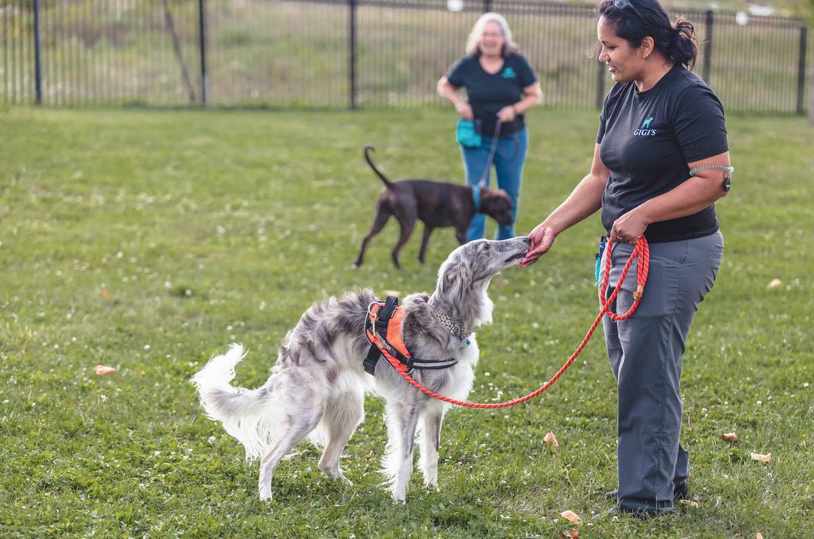
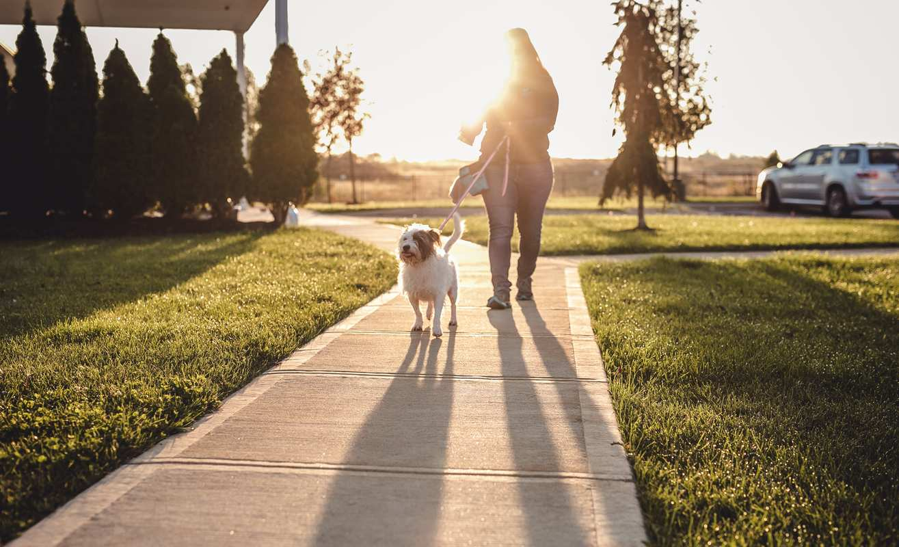

Foundations: Training
Behavioral Training
Skills and confidence in classes and 1-on-1. Think of it as your dog's life coach.
From $42Learn more
Judgement Free Behavior Care. At Every Stage.
If your dog struggles, you're not alone. Most dogs need behavioral support at some point. Start wherever makes sense for you.

Quick links
You don't need to know what kind of help you need. Start with what you're seeing at home.
of dogs show at least one behavior their family finds problematic. Early support is the easiest way to stay ahead of it.
Range across Voith 1985; Campbell 1986; O'Farrell 1992; Martínez 2011 (per Boyd et al. 2018).
Where we'd lean
If someone has been hurt, get medical care first. Until we can meet, keep your dog safely separated from people, and contact your veterinarian about immediate safety. When you book, let us know it's urgent.
Tell us a bit more
Behavior isn't good or bad. It's shaped by genetics, environment, stress, and fear and it responds to the right support.
Foundations: Training
Skills and confidence in classes and 1-on-1. Think of it as your dog's life coach.

Support: Modification
A guided plan with a Certified Dog Behavior Consultant. Think of it as your dog's therapist.
Specialty: Medicine
Diagnosis and medication support with our Veterinary Behaviorist. Think of it as your animal's psychiatrist.
No referral needed to start with us.
A free 15-minute Care Navigation Call. The first step for Modification and Medicine.
Book a free callFoundational skills for puppies and adult dogs. Three quick questions make sure group class is the right fit, then pick a class and time.
Book a classYour veterinarian can refer you to any stage of care. We'll take it from there together.
How vet referrals work(hint: it's not perfection)
Success is fewer reactions, shorter recovery and calmer days for your dog and your family.
Walked past the
neighbor's dog
Settled when the
doorbell rang
Took a treat
at the vet

Loose leash for
a whole block
Napped while
we were out
Bounced back
faster after a bark
Real impact is measured in months, not days.
Why specialists matter
Foundational training is everywhere. Medical behavior specialists barely exist. Gigi's is one team across the whole range.
Foundations: Training
25,000+
Positive-reinforcement trainers, worldwide.
Roughly 25,000 hold the CPDT-KA credential; 3,050+ are Karen Pryor Academy certified. Foundational training is broadly available. Dog training is an unregulated industry, so certification is a deliberate quality choice.
CCPDT; Karen Pryor Academy (worldwide figures).
Support: Modification
~3,000
Certified behavior consultants, worldwide.
Around 3,000 hold the IAABC CDBC credential worldwide, specialists trained for aggression, fear, anxiety, and complex behavior modification.
IAABC (worldwide).
Specialty: Medicine
<100
Practicing specialty Veterinary Behaviorists, in the United States.
Fewer than 100 practicing board-certified Veterinary Behaviorists in the United States: the only professionals who can diagnose and medically treat behavioral conditions. The rarest stage of care, and Gigi's puts it within reach.
ACVB diplomate counts.
Most dogs need support. Gigi's is one team across every stage of it.
How we work together
The relationship between Gigi's and our clients isn't a service relationship. It's a collaboration. Our team coordinates on the back end so your experience feels seamless. You collaborate with us to do the work that actually impacts your dog's behavior. Both are required. Neither alone is enough.
Real impact is measured in months, not days.
For Referring Veterinarians
Refer clients to any stage of care, from group classes to one of fewer than 100 practicing board-certified Veterinary Behaviorists in the United States. We handle behavior, so you can focus on the rest.
Care Navigation
Not sure where to start? Book a free 15-minute Care Navigation Call with our Client Success Manager, who will review your dog's behavior concerns and guide you to the right stage of care. No pressure, no obligation.